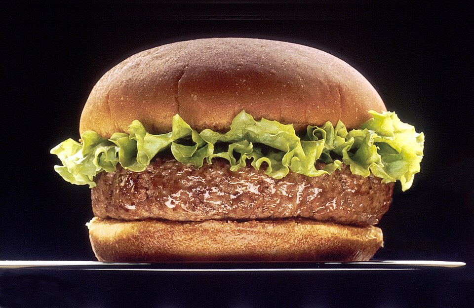

Homemade Hamburgers: A Classic Favorite
Homemade Hamburgers
Recipe by: Shyliah Heads, adapted from a classic homemade hamburger recipe.

Hamburger image: Len Rizzi, National Cancer Institute, public domain.
Ingredients
- 1 pound ground beef
- 4 hamburger buns
- 1 teaspoon salt
- 1/2 teaspoon black pepper
- 4 slices of cheese
- Lettuce
- Tomato slices
- Pickles
- Ketchup
- Mustard
Equipment
- Large mixing bowl
- Skillet or grill
- Spatula
- Plate
- Measuring spoons
Directions
- Place the ground beef in a large mixing bowl.
- Add the salt and black pepper and gently mix until combined.
- Divide the mixture into four equal portions and shape each portion into a patty.
- Cook the patties on a skillet or grill until they are fully cooked.
- Place a slice of cheese on each patty during the final minute of cooking.
- Toast the hamburger buns if desired.
- Place each cooked patty on a bun and add lettuce, tomato, pickles, ketchup, and mustard.
- Serve the hamburgers while warm.
This page created as academic activity only.